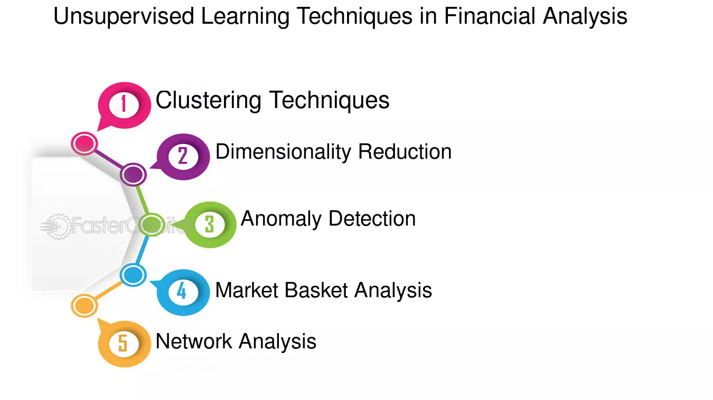
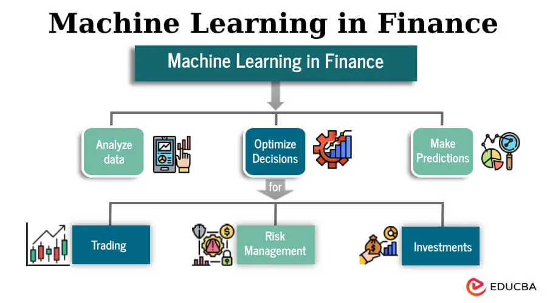
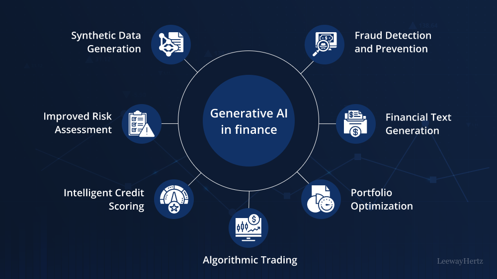

Projects I've built, in no particular order
Unsupervised Finance Models |
|
|
Developing advanced AI algorithms to analyze financial data using unsupervised learning techniques. This project focuses on identifying hidden patterns, clustering similar investment strategies, and detecting anomalies in market trends, enabling smarter, data-driven financial decisions without reliance on labeled data. |
 |
Supervised Finance Models |
|
|  |
Building AI models that leverage labeled financial data to predict outcomes such as stock price movements, credit risk, or loan defaults. This project focuses on training algorithms to make accurate, real-time predictions, enhancing decision-making in investment strategies and risk management. |
Generative Finance Models |
|
|
Exploring the use of generative AI to create realistic financial scenarios, generate synthetic data for stress testing, and design innovative investment strategies. This project aims to enhance financial modeling, risk assessment, and personalized client experiences through AI-driven creativity and simulation. |
 |